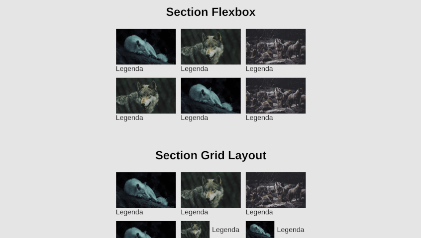
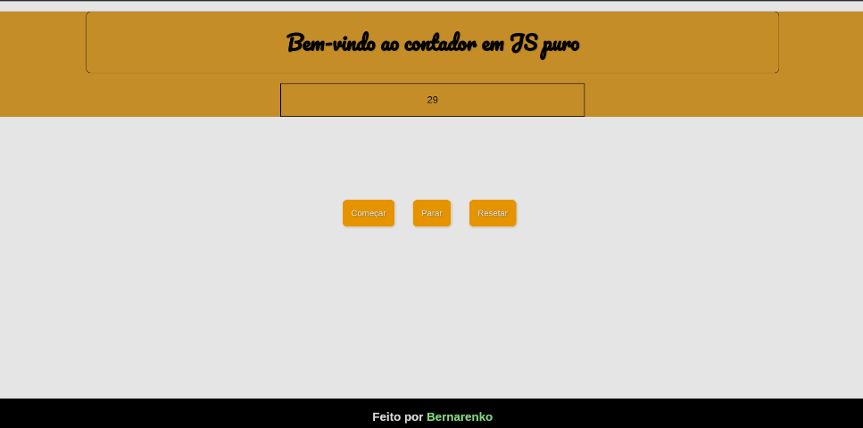
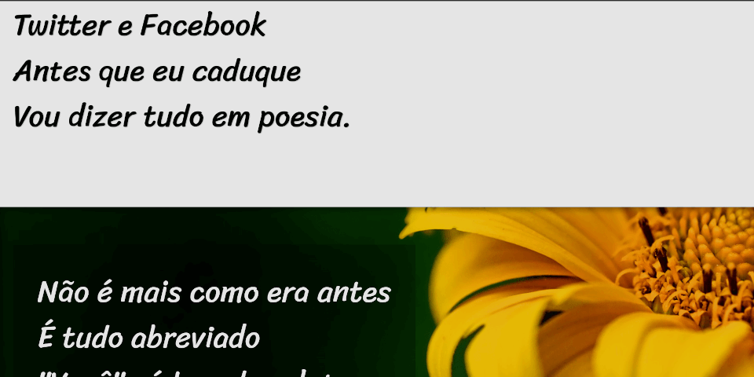

Exercício flexbox
Aprendido através do youtube no canal Origamid. E outros Exercícios feitos em paralelo
Exercício Javascript - Stopwatch
Ideia própria, básico de JS aprendido com Gustavo Guanabara do CursoEmVideo.
Exercício de Parallax.
Ideia sugerida por Gustavo Guanabara no último modulo de HTML e CSS do CursoEmVideo
